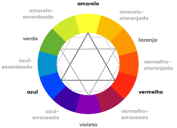

Musiquinha para ouvir enquanto lê
Voltar para capítulos
Capítulo 13 - Básico de CSS
Aula 01 - Psicologia das cores
Na criação de sites, os desenvolvedores devem tomar em conta a emoção que cada cor está associada.
Por exemplo → Sites de restaurantes combinam com uma tonalidade mais puxada para o marrom, já sites de moda para o roxo/rosa. Abaixo vai um quadro para representar cada cor e a sua associação.
Aula 02 - Representando cores com CSS
- Como representar cores em CSS
- Exemplo de um código CSS indicando cores:
Podemos representar as cores pela forma rgb() ou hsl().
rgb() → rgb(red, green, blue)
hsl() → hsl(hue[matiz], saturation, luminosity)
Além dessas funções, podemos escrever um código e indicar a cor pelo nome da cor ou com um código hexadecimal.
Algarismos hexadecimais: 1 2 3 4 5 6 7 8 9 A B C D E F
Além disso, caso queira descobrir uma cor que você gostou ou quiser criar alguma, poderá usar o GIMP ou photoshop.
body{
color: □blue;
color: #FFFFFF;
color: rgb(0, 0, 255);
color: hsl(240, 100%, 50%);
}
Aula 03 - Harmonia de cores
- O círculo cromático
Devemos escolher algumas cores do círculo cromático. (É recomendado que escolha de 3-5 cores para fazer parte da sua paleta de cores.)
 -
Harmonia
As cores possuem várias formas de serem combinadas:
- Temperatura
- Cores complementares
- Cores análogas
- Cores análogas mais uma complementar
- Cores análogas relacionadas
- Cores intercaladas
- Cores triádicas
- Cores em quadrado
- Cores tetrádicas
- Monocromia
Aula 04 - Onde aplico esse conhecimento?
Existem vários sites para fazer paletas de cores (suas, personalizadas) de forma fácil e simples, sem se preocupar em decorar as harmonias de cores indicadas anteriormente.
- Color Adobe → Crie sua propria paleta de cores, de forma simples. Também é possível colocar uma foto para retirar dela suas cores.
- Paletton → Criar paleta de cores e testar de forma prática a beleza da paleta criada.
- Coolors → Criar paletas de forma simples, somente apertando o espaço.
Aula 05 - Como criar degradê com CSS
Poderemos fazer um gradiente(degradê) de forma simples que nem o exemplificado:
Para isso, iremos ter que utilizar um código CSS dentro de um style.
Exemplo:
body{
background-image: linear-gradient(to right, crimson, gold,blue);
background-attachment: fixed
}
OU
body{
background-image: radial-gradient(circle, crimson, gold, blue);
}
Tags utilizadas:
background-image: linear-gradient(direção, cor, cor, cor...);→ Essa tag faz o fundo de qualquer tag ficar em degradê, podemos colocar quantas cores quisermos após escolhermos a direção. A direção poderá ser to right, to top, to bottom, to left, 45deg, -45deg, etc.background-attachment: fixed;→ Essa tag faz o fundo preencher a página toda e junto com o scroll o degradê acompanhar e não parar subitamente.background-image: radial-gradient(circle, cor, cor, cor...);→ Mesma coisa que a tag n°1, só muda que o gradiente é em formato radial, podendo escolher a forma
Aula 06 - Tags CSS
background-image: linear-gradient(to right, blue, red, yellow);→ Cria gradientes(degradê).font-family: ;→ Muda a fonte de algo escrito.padding: 10px;→ Espaçamento da página sem nada escrito.border-radius: 10px;→ Mudar a borda da caixa de forma que fique circular.margin: auto;→ Posição da tag (posição do main). Neste caso, auto deixará o main no meio.width: 900px;→ A largura, neste caso, 900 pixels.box-shadow: 2px 2px 10px black;→ Sombra da caixa, neste caso, do main. A cor no fim será a sombra e as medidas o tamanho da sombra, a posição, etc.color: gold;→ Mudar a cor da fonte.text-shadow: 1px 1px 2px black;→ Sombra do texto.text-align: justify;→ O alinhamento do texto na página, neste caso ojustifyserá um alinhamento igualado.text-decoration: underline;→ Colocar alguma decoração no texto, neste caso, sublinhar.background-attachment: fixed;→ O fundo ficará fixo na página inteira, até quando dermos scroll para baixo.